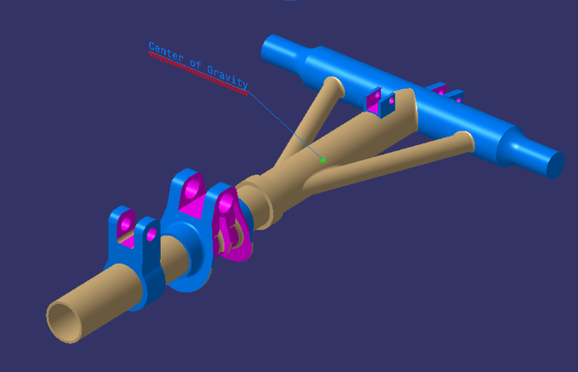
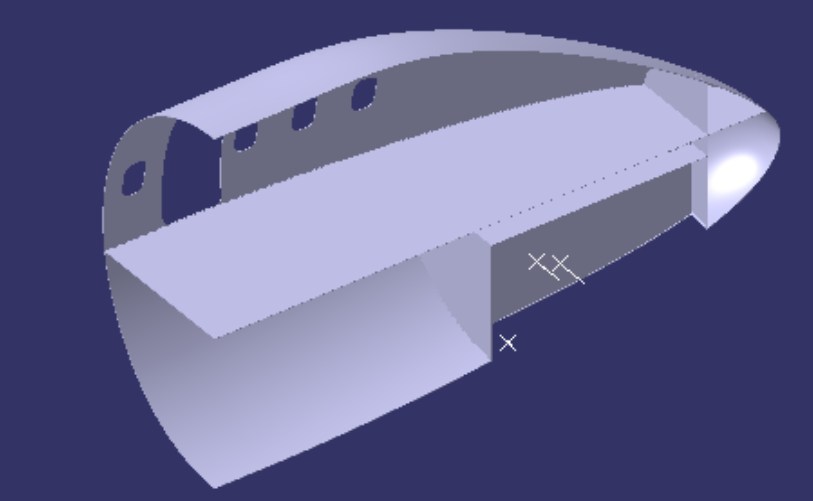

REF_E01 · MAY – AUG 2026 01 / 04
Boeing
Stress Analysis Intern
// Projects ＋
- Reviewed business-class seat certification packages for FAR and Boeing requirements.
- Checked seat load paths and supplier FEM results at seat-leg attachments, and verified geometry across CATIA models and drawings.
- Built a Power BI dashboard that automated daily project-status reporting, replacing a weekly manual Excel report.
// Structural Panel Design ＋
Week-long Boeing Structures training project: designed a vent-duct penetration through a structural panel, with its bracket, doubler, and fasteners, then built and installed it on a mock structure.
- RequirementsLoads, geometry, and design criteria from the coordination sheet
- Solution & AnalysisBracket bending, doubler sizing, and Hi-Lok fastener layout
- Testing & Installation3D-printed bracket installed on a mock aircraft structure
Full methodology ＋
01 Requirements
- Pulled the penetration, bracket, applied loads, and surrounding geometry from the coordination sheet.
- Identified missing inputs: web and bracket thickness, material properties, and allowable stresses.
- Applied design criteria for fastener pitch, edge margin, clearance, and reinforcement, and separated fixed geometry from what could move.
02 Solution & Analysis
- Bracket: traced the vent load path, calculated bending moment and section properties, and checked bending stress against the allowable.
- Doubler: sized a local doubler from the running load interrupted by the penetration to restore the web’s load path.
- Fasteners: laid out Hi-Lok fasteners for pitch, edge margin, and clearance, reusing existing holes where possible.
- Iteration: adjusted penetration location, bracket, doubler, and fasteners together until every check passed.
03 Testing & Installation
- 3D-printed the bracket and installed the bracket, doubler, fasteners, and penetration on a mock aircraft structure.
- Learned how manufacturability, tolerances, access, and assembly sequence shape a design.
Scope: a one-week training exercise with simplified inputs. A production modification would add fatigue and damage-tolerance analysis, more failure modes, corrosion protection, inspection planning, and formal cross-functional review before certification.
// CATIA Class ＋
Practice models built during a Boeing training course, not production hardware.

